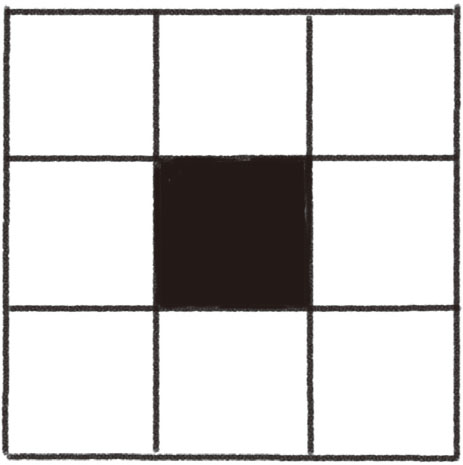
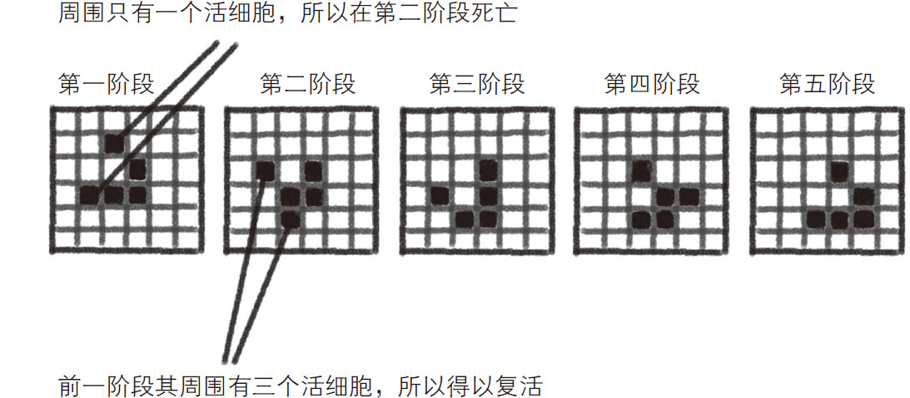
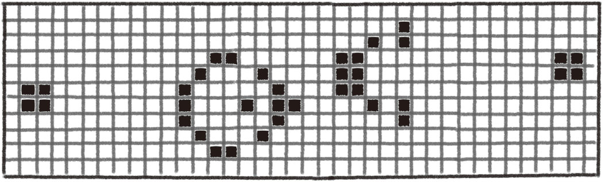
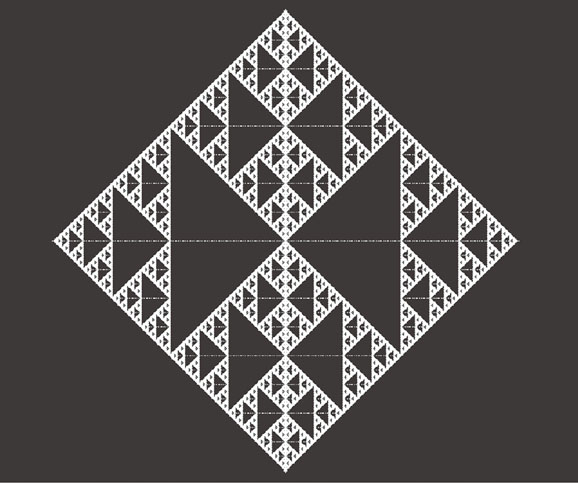
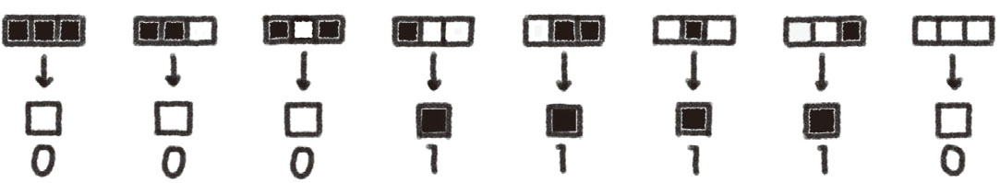
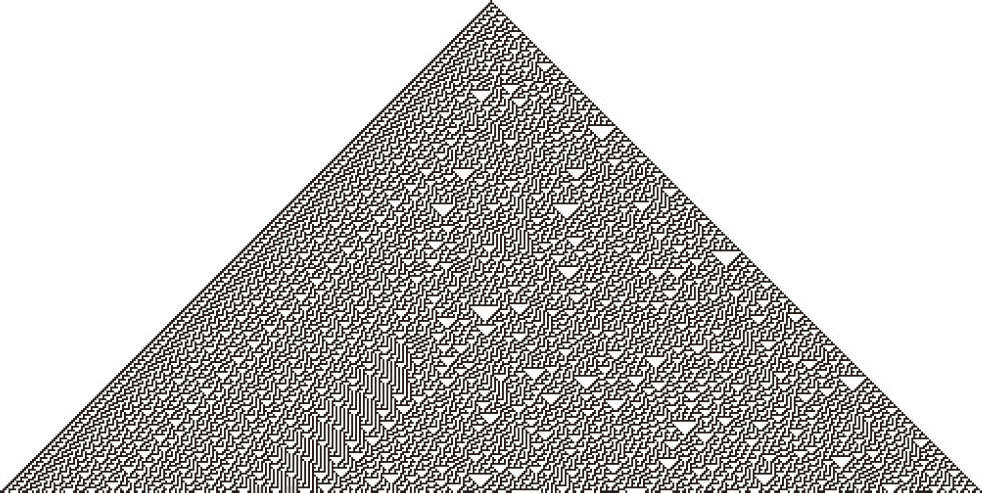
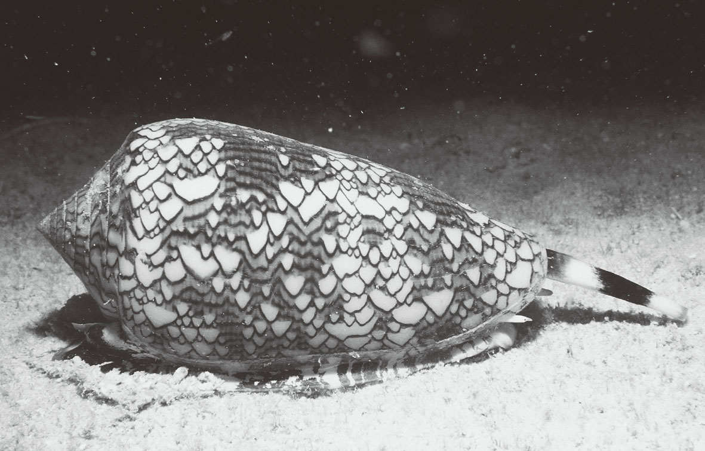

城市和乡下，大家更喜欢生活在哪里？虽然乡下的生活十分悠闲，但是随着人口的减少，很多时候周围连个可以说话的人都没有，久而久之一定很枯燥。而生活在城市的人，虽然可以体验各种新鲜事物，但是无论去哪儿都是人山人海，仅仅是搭乘拥挤的公交车就足以让人烦躁。人是一种群居性动物，没有哪个人能独自走完一生，但是身边的人太多也会让人觉得憋闷。
很多群居性动物也是这样。它们必须一起寻找食物、一起抵御天敌，才能生存下去。但反过来，如果同类大量繁殖，就会出现因食物不足或内部压力而死的情况。包括人类在内，所有群居性动物都面临着一个问题，那就是周围同伴的多少决定着自己的生死 。
如果将这个问题简单化，可以这样认为：动物是可以因周围同伴数量的多少而“生”或“死”的 。下面要给大家介绍的“生命游戏 ”就是人们从这个现象中获得灵感而设计出来的。
“生命游戏”中有一个二维的网格状矩形世界，这个世界的每个方格中都居住着一个白色（死了的）或黑色（活着的）的细胞。每个细胞周围有八个与之相邻的细胞，每个细胞的生与死取决于与之相邻的黑色细胞的数量。例如，图3-2中心的黑色细胞，因为其周围都是白色细胞，符合下面的第三条规则，所以这个细胞很快就会死去。

图3-2 单个细胞及其周围
“生命游戏”中每个细胞的生与死遵循着以下规则：
1．细胞复活 。如果某个已死亡的细胞周围出现了3个活细胞，则该细胞复活（由白色变为黑色）。
2．细胞维持生命 。如果某个活细胞周围有2个或3个活细胞，则该细胞保持存活状态（保持黑色）。
3．细胞死亡 。如果某个细胞周围的环境不属于上述情况，则该细胞会很快死亡（由黑色变为白色）。也就是说，如果某个细胞的周围有4个或4个以上活细胞，就会因为细胞过密而死亡；如果其周围只有一个或者没有活细胞，就会因为细胞过疏而死亡。
记住以上三个规则就可以开始“生命游戏”了。在游戏开始前，必须先设定每个玩家，也就是每个细胞周围的活细胞（黑色）数量，接着依照上述游戏规则进入游戏。每个细胞的生与死会时刻发生变化，如同一个真实的生命群体在演绎着他们复杂的生命轨迹。
打开“生命游戏”应用程序后，初始状态一般是所有细胞均为已死亡的细胞（全部为白色），玩家可以自行设定想要变黑的细胞的位置，单击方格，就能改变其颜色。在决定了活细胞（黑色）的分布后，按“开始”键，就可以正式开始“生命游戏”了。
很多游戏都会为玩家预先设置一个剧本。在“生命游戏”中，玩家如果觉得自己设置初始状态太麻烦，也完全可以使用游戏预设的剧本，这样就能快速体验游戏的乐趣。游戏中一共有多少个细胞会根据游戏版本的不同而不同，但一般来说，各种版本都足以满足玩家的游戏需求。
“生命游戏”的发明者是英国数学家约翰·康韦 。他从“元胞自动机 ”这一模型中得到启发，发明了这款游戏。元胞自动机是由美国数学家冯·诺依曼和斯塔尼斯拉夫·乌拉姆 共同开发的离散并行计算模型。
当时，冯·诺依曼致力于用数学思维再现生物的繁衍行为，即繁殖后代的行为。他将生物简化为“多细胞的集合”后将其作为分析对象，其中一个细胞相当于一个“单元”。初始时，假设一个细胞共有29种状态，其与周围细胞的相互作用会给它带来无数种变化。冯·诺依曼发现，从初始状态开始，多细胞的集合就像一台复印机一样，不断产生与自身相同的细胞集合。也就是说，冯·诺依曼成功地用数学思维揭示了生物自我复制的规律。他将这个复制体系称为“通用构造器”。在那个没有现代电脑的年代，冯·诺依曼仅用一支笔和一张格子纸就完成了如此复杂的计算，真是一件非常了不起的事。
当康韦知道了这种计算方式后，将细胞状态简化为2种，分别为“生”（黑色）与“死”（白色），试图创立一个能够将生物集团极度简化的模型，于是就有了上文提到的“生命游戏”。“生命游戏”因其规则简单，却能演示出超复杂的变化而被世人称赞，并且各种模式被相继研究了起来。
下面给大家介绍一下“生命游戏”中最具代表性的“滑翔机”结构 ，如图3-3所示。首先看最左边的格子。其中的5个活细胞呈“V”字形排列，我们就从这里开始“生命游戏”。在下一阶段，有两个细胞死亡，但有两个细胞复活，此时图形发生了细微的变化。继续进行游戏，在第五阶段时，图形又恢复为最初的样子，但如果仔细观察就会发现，图形整体向右下方移动了一格。

图3-3 “生命游戏”的“滑翔机”结构
可以看出：在“滑翔机”模式下，每经过四个阶段，图形就会出现整体向右下方移动一格的现象 。综观这个游戏过程，这个“V”字形如同一架不断地沿一条直线移动的滑翔机。
在“滑翔机”模式基础上，又出现了“滑翔机枪 ”结构，如图3-4所示。由于其状态的变化比较复杂，所以这里只展示其某个阶段的状态。这个模式的图形变化规律是：滑翔机枪会不断地、呈周期性地射出一架架滑翔机，构成一个滑翔机队列。因为这与生物的不断繁殖相似，所以这类结构也被称为“繁殖结构 ”。

图3-4 “滑翔机枪”结构
有趣的是，将某个特定结构作为初始状态，会逐渐出现第一章介绍过的拥有分形结构的图形。例如，初始状态为一排紧密相连的活细胞，最终会形成一个名为“谢尔平斯基三角形 ”的分形图形，如图3-5所示。原本只有若干个呈一条直线排列的细胞，竟然可以演变出如此复杂的分形图形，真是不可思议！

图3-5 谢尔平斯基三角形
（使用Golly 3.2绘制）
通过“生命游戏”可以绘制出自然界中存在的复杂图形，其中，由英国理论物理学家斯蒂芬·沃尔弗拉姆 设计的“规则30”模式 是比较著名的例子。这个模式与一般的“生命游戏”模式不同，它是一款根据排列在一条直线上的细胞来决定其状态变化的一维“生命游戏”。
在二维“生命游戏”中，每个细胞由其周围的8个细胞的状态决定其生死。在一维“生命游戏”中也一样，生死由周围细胞的状态决定，只不过，在一维“生命游戏”中，每个细胞的周围只有2个细胞，分别位于其左、右两边。换句话说，决定一维“生命游戏”中某个细胞生死的只有自身和其周围的2个细胞。
那么，该如何进行这个游戏呢？其实，一维“生命游戏”有很多模式，下面给大家介绍这种名为“规则30” 的模式，如图3-6所示。

图3-6 一维“生命游戏”中的“规则30”模式
（岩本真裕子绘制，图形做了部分修改）
在图3-6中，每个部分第一行都有3个相邻的细胞，分别用黑色和白色来表示。每个细胞各有黑和白两种模式，所以3个细胞的排列模式共有2×2×2＝8种。第二行表示的是进入下个阶段时，位于中间的细胞的状态。例如，左起第二幅图中的3个细胞分别为黑色、黑色、白色。在这种模式下，位于中间的细胞会在下个阶段死亡，也就是变为白色。
综上所述，我们只需要逐一列出上述8种模式在下一阶段的状态，则在任何情况下都能确定游戏下一个阶段的状态，将游戏进行下去。
为什么将这种模式命名为“规则30”模式呢？正如图3-6所示的细胞变化规则，如果用0和1两个数字来表示在各种模式下中间细胞下一阶段的状态，也就是用0表示白色，用1表示黑色，就会得到“00011110”这个数列，而这个数列正是二进制中的数30。
对于呈一条直线排列的大量细胞来说，如果在初始时，只设定其中一个细胞为黑色，其余细胞均为白色，那么在“规则30”模式下，下一阶段众细胞的状态就能根据上一阶段众细胞的状态不断变化，最终会出现如图3-7所示的复杂图形。在这个图形中，位于上端的顶点代表的就是初始时设定的黑色细胞。

图3-7 “规则30”模式下形成的复杂图形
（图片来源：http://mathworld.wolfram.com/Rule30.html）
上述图形与芋螺 贝壳上的花纹几乎一模一样，如图3-8所示。之所以会出现这样的现象，是因为芋螺贝壳上的花纹的形成过程与“生命游戏”极为相似。芋螺贝壳的边缘布满了色素细胞，当某个色素细胞活化时，会分泌大量色素，这些色素会对周围的色素细胞的活性产生干扰 。这种与周围细胞相互作用的现象，与“生命游戏”如出一辙。另外，色素细胞是呈带状分布的，这也与一维“生命游戏”中的细胞排列情况非常相似。总之，芋螺贝壳每长一层细胞，给人的感觉就像在玩一个一维“生命游戏”。

图3-8 芋螺身上的花纹
（图片来源：DE AGOSTINI PICTURE LIBRARY）
在一维“生命游戏”中，每推进一步，新的结果就会添加在下面，芋螺也是这样一层一层地制造自己的花纹的。芋螺通过延展自己的贝壳边缘来不断地长大，这个过程中形成的花纹会一层一层地刻在贝壳上，这又与“生命游戏”中的细胞逐渐变化，形成复杂图形的原理一致。
其实，拥有如此复杂的花纹，对芋螺的藏身是非常有帮助的。芋螺含有剧毒，会对靠近自己的小鱼伸出“毒鱼叉”（长长的毒针），这根毒针会刺穿并麻痹对方，然后芋螺便可以将对方吞食。尽管芋螺的移动速度非常缓慢，但是它身上复杂的花纹可以与水底的砂石混为一体，使它不容易被猎物发现，而当鱼意识身边有芋螺的时候，一切都晚了，它们此时已经在芋螺毒针的攻击范围之内了。
在“规则30”模式中，只要对初始时活细胞的位置稍作改变，最终形成的图形就可能发生很大的变化。我们将这种对初始条件非常敏感的系统称为“混沌系统” 。因为最终的结果难以预测，基本接近随机，所以有时也被用来生成随机数。其实，芋螺个体之间的花纹差异很大，这是它们形成时的环境不同造成的。如果所有的芋螺都拥有相同花纹，就会被小鱼识破。换句话说，拥有不同的花纹算是芋螺的一种生存策略。
从生物的繁衍行为得到启发，进而研发出来的“生命游戏”被广泛应用于解释生命现象、研究混沌系统，以及生成随机数等方面。仅用一张纸就能写全的简单规则，竟然能引出如此深奥的理论，只能用“震撼”两个字来形容了！
再给大家普及一个常识：芋螺通常生活在温暖的海水中，但它的剧毒足以让人毙命，所以如果在海水浴时看到芋螺，一定不要想着把它带回家研究。